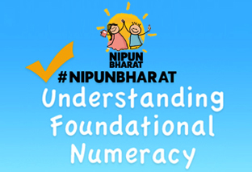
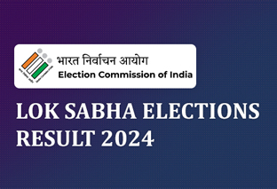
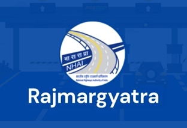
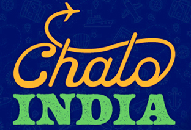
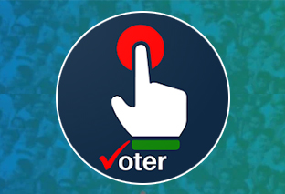
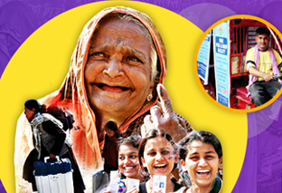
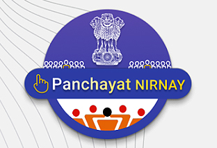
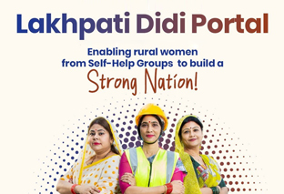

Understanding and Numeracy,is a National Initiative for
ensuring that every child in the country necessarily
attains foundational literacy and numeracy by the end of Grade 3.
SPOTLIGHT
NIPUN Bharat
National Initiative for Proficiency in Reading withUnderstanding and Numeracy,is a National Initiative for
ensuring that every child in the country necessarily
attains foundational literacy and numeracy by the end of Grade 3.

MOBILE APPS
ePathshala
The ePathshala, a joint initiative of MoE,and NCERT has been developed for showcasing and disseminating
all educational e-resources including textbooks, audio,
video, periodicals, and a variety of other digital resources.

reflected the dedication of voters, political parties, candidates,
election personnel, and security forces.
Their collective efforts ensured a smooth electoral process, highlighting the resilience and
vibrancy of Indian democracy.
SPOTLIGHT
General Election Results, 2024
The 2024 General Elections, conducted in seven phases,reflected the dedication of voters, political parties, candidates,
election personnel, and security forces.
Their collective efforts ensured a smooth electoral process, highlighting the resilience and
vibrancy of Indian democracy.

to help them in providing highway information and various services
related to their journey. User can get the details of nearest toll plaza, toll plaza enroute,
know the NH, nearby services like petrol pump, hospital, hotel etc.
MOBILE APPS
Rajmargyatra
A unified mobile Application developed for NHAI for Highway users across the country,to help them in providing highway information and various services
related to their journey. User can get the details of nearest toll plaza, toll plaza enroute,
know the NH, nearby services like petrol pump, hospital, hotel etc.

to encourage Indian diaspora members to invite non-Indian friends to travel to India.
This program aims to empower diaspora members to
serve as ambassadors for Incredible India, playing a
crucial role in boosting tourism and enhancing cultural awareness.
SPOTLIGHT
Chalo India Initiative
Chalo India is an initiative by the Ministry of Tourism,to encourage Indian diaspora members to invite non-Indian friends to travel to India.
This program aims to empower diaspora members to
serve as ambassadors for Incredible India, playing a
crucial role in boosting tourism and enhancing cultural awareness.

& popularity from the citizens.
This application of the ECI has revolutionized the way we access
& engage with voter-related services.
From registration of new electors, correction of demographic details
in the electoral roll, the search of names in the electoral roll...
MOBILE APPS
Voter Helpline App
The Voter Helpline App has witnessed a significant response& popularity from the citizens.
This application of the ECI has revolutionized the way we access
& engage with voter-related services.
From registration of new electors, correction of demographic details
in the electoral roll, the search of names in the electoral roll...

Service Portal such as to locate their names in the Electoral Roll,
Apply for a new Voter Id, Request a correction etc.
SPOTLIGHT
Voter Information & Services
Voters may avail all forms and services at the National Voters'Service Portal such as to locate their names in the Electoral Roll,
Apply for a new Voter Id, Request a correction etc.

allows panchayat secretaries to upload Gram Sabha proceedings in a predefined format,
facilitating efficient documentation.
MOBILE APPS
Panchayat Nirnay
The Panchayat Nirnay app, part of the National Initiative for Rural India,allows panchayat secretaries to upload Gram Sabha proceedings in a predefined format,
facilitating efficient documentation.

Rs. 1,00,000. Beyond financial success, they inspire through adopting sustainable livelihood practices
and achieving a decent standard of life.
SPOTLIGHT
Lakhpati Didi Portal
A Lakhpati Didi is a Self-Help Group member with an annual household income exceedingRs. 1,00,000. Beyond financial success, they inspire through adopting sustainable livelihood practices
and achieving a decent standard of life.
MOBILE APPS
Digi Yatra
Digi Yatra - Digital processing of passengers at the airports.Passengers will be automatically processed based on facial recognition system at check points like;
Entry point check, Entry in to Security Check, Aircraft Boarding